import torch
from torch.distributions import Bernoulli
def gen_m(N):
return Bernoulli(torch.tensor(0.5)).sample((N,))
def w_s(M):
return 1 - 0.5 * M # p(0 | M=0) = 1 and p(0 | M=1) = 0.5.
def gen_t(M):
is_MZ = Bernoulli(torch.tensor(0.5)).sample(M.shape)
p_inherit = 0.5 * M
T1 = Bernoulli(p_inherit).sample()
T2 = torch.where(is_MZ == 1, T1, Bernoulli(p_inherit).sample())
return T1, T23 Conditioning
\[ \def\then{\mathbin{;}} \def\kernel{\rightsquigarrow} \def\swap{\mathsf{swap}} \def\id{\mathsf{id}} \def\cp{\mathsf{copy}} \def\del{\mathsf{del}} \def\supp{\mathsf{supp}} \def\ivmark#1{[\![#1]\!]} \]
In the Introduction, we described Bayesian inference as a two-step process: build a generative model, then condition on observed data. In the previous chapter, we learned how to build generative models by composing kernels into string diagrams. Now we turn to the second step: conditioning, which updates a model to account for the fact that certain outputs have been observed. The result is a new generative process that produces only outcomes compatible with the observations.
We begin by introducing a graphical procedure for conditioning on specific observed values by modifying individual boxes in a string diagram. Next, we define conditional independence and show how to read it off from the diagram structure. Finally, we discuss how to sample from conditioned models using weighted sampling.
3.1 Conditioning on observations
The most common form of conditioning fixes a variable to a specific observed value. For discrete kernels, there is a convenient graphical procedure for this. The same procedure will also extend to non-discrete kernels with densities later in the course, even though individual points have probability zero in that setting.
3.1.1 Pre-conditioned kernels
The graphical procedure for conditioning works by modifying individual boxes in the diagram. We call this operation pre-conditioning: fixing one of the inputs or outputs of a box to a specific value.
Definition 3.1 Let \(g : X \otimes Y \kernel U \otimes W\) be a discrete kernel.
Pre-conditioning on an input. We define \(g_{\mid X=\bar x} : Y \kernel U \otimes W\) to be the kernel obtained by fixing the input \(X\) to the value \(\bar x\): \[ g_{\mid X=\bar x}(u,w \mid y) := g(u,w \mid \bar x, y). \]
Pre-conditioning on an output. We define \(g_{\mid U=\bar u} : X \otimes Y \kernel W\) to be the kernel obtained by fixing the output \(U\) to the value \(\bar u\): \[ g_{\mid U=\bar u}(w \mid x,y) := g(\bar u,w \mid x,y). \]
Pre-conditioning on an input is harmless: it simply specializes the kernel to a particular input value, and the result remains a probability kernel. Pre-conditioning on an output selects only those outcomes where \(U = \bar u\), which generally reduces the total weight. The result is therefore an unnormalized kernel.
3.1.2 Graphical procedure
Given a string diagram of probability kernels, we can condition on an observation \(U = \bar u\) using the following three-step procedure:
- Remove the observed wire. Delete all output wires that carry \(U\).
- Pre-condition affected boxes. Replace any box \(g\) that has \(U\) as an input or output by its pre-conditioned version \(g_{\mid U = \bar u}\).
- Normalize. Normalize the resulting diagram to obtain a probability kernel.
This procedure is justified by applying the definition of conditional probability to the sum-product expression for the diagram. Consider a diagram with outputs \(U\) and \(W\) and sum-product form \[ p(u, w) = \sum_{\text{internal}} \prod_i f_i(\text{outputs}_i \mid \text{inputs}_i). \]
Conditioning on \(U = \bar u\) means computing \(p(w \mid \bar u) = p(\bar u, w) / p(\bar u)\). In the sum-product expression, fixing \(U = \bar u\) amounts to replacing each factor that involves \(U\) by its value at \(\bar u\), which is precisely pre-conditioning the corresponding box. The denominator \(p(\bar u) = \sum_w p(\bar u, w)\) provides the normalization.
Example 3.2 Recall the fire alarm causal model:

Pre-conditioning on the observation \(S = \bar s\) yields the following diagram:
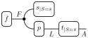
Conditioning on multiple variables. To condition on several variables, repeat the procedure for each one. The order does not matter: conditioning on \(U = \bar u\) and then on \(V = \bar v\) gives the same result as conditioning on \(V = \bar v\) and then on \(U = \bar u\), because both yield the same sum-product expression with \(U\) and \(V\) fixed.
Alternative view: observed values as inputs. Often it is useful to think about how the pre-conditioned model depends on the choice of \(\bar u\). To do this, we can view the observed value \(\bar u\) as an input to the pre-conditioned boxes rather than a fixed constant. For pre-conditioned kernels where \(U\) was an input, this recovers the original kernel \(g\). For pre-conditioned kernels where \(U\) was an output, this gives the new kernel \(g_{\mid U}(w \mid x,y,\bar u) := g_{\mid U = \bar u}(w \mid x, y) = g(\bar u, w \mid x, y)\).
Example 3.3 Viewing the observed value of \(S\) as an input gives the following diagram for the fire alarm model:
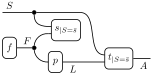
Note that with the new inputs, \(t_{\mid S = \bar s}(a \mid \bar s, l) = t(a \mid \bar s, l)\) and \(s_{\mid S = \bar s}(\bullet \mid \bar s, f) = s(\bar s \mid f)\).
Conditioning on general events. More generally, one can condition on an event \(E \subseteq Z\) rather than a single point. Recall from the Introduction that the conditional probability of \(Y = y\) given \(E\) with \(p(E) > 0\) is \[ p(y \mid E) = \frac{p(y, E)}{p(E)}. \] Both the numerator \(p(y, E) = \sum_{z \in E} p(y, z)\) and the denominator \(p(E) = \sum_y p(y, E)\) can be estimated from the joint distribution, so this reduces to computing joint and marginal probabilities from the model.
3.2 Conditional independence
Conditional independence is the structural property that makes large models tractable. It says that once we know a certain set of variables, some other variables become irrelevant to each other. We already encountered this idea informally in the Introduction. We now give a precise definition in terms of kernels.
Definition 3.4 Let \(g : \kernel U \otimes V \otimes W\) be a kernel with no inputs. We say that \(U\) and \(V\) are conditionally independent given \(W\), denoted \((U \perp V \mid W)\), if \(g\) can be written in the following form: \[ g(u, v, w) = a(u \mid w) \, b(v \mid w) \, c(w), \] where \(a\), \(b\), and \(c\) are kernels. In diagrams:
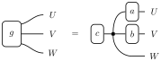
By bundling, this definition applies equally when \(U\), \(V\), and \(W\) each consist of multiple variables.
The factorization says that \(g\) generates \(W\) first, then generates \(U\) and \(V\) independently by feeding \(W\) into separate kernels \(a\) and \(b\). In particular, conditioning on \(W\) makes \(U\) and \(V\) independent. To see this, apply the pre-conditioning procedure to \(g\) to fix \(W = \bar w\) and note that the resulting diagram factors into two separate parts generating \(U\) and \(V\). Therefore, once \(W\) is known, learning \(V\) tells us nothing new about \(U\), and vice versa.
The above definition can be extended to kernels \(g : X \kernel U \otimes V \otimes W\) with inputs: \((U \perp V \mid W)\) if \(g\) can be written in the form \[ g(u, v, w \mid x) = a(u \mid w) \, b(v \mid w,x) \, c(w \mid x). \]
Note that \(b\) may depend on \(x\) while \(a\) does not, making the definition asymmetric in \(U\) and \(V\). This is stronger than requiring conditional independence for each fixed input \(x\).
3.2.1 Graphical test for conditional independence
String diagrams make it easy to read off conditional independence relationships directly from the model structure, without computing any probabilities. Consider a string diagram of probability kernels. Let \(U, W, X\) be arbitrary disjoint sets of variables represented by wires in the diagram. To check whether \(U\) and \(W\) are conditionally independent given \(X\):
- Delete irrelevant outputs. Delete all output wires except those carrying \(U\), \(W\), and \(X\).
- Simplify. Reduce the diagram to normal form by applying the delete axioms.
- Condition on \(X\). Delete all wires carrying \(X\) (equivalently, pre-condition on \(X\)).
- Check for disconnection. If \(U\) and \(W\) are disconnected in the resulting diagram (meaning there is no undirected path of wires and boxes connecting any wire in \(U\) to any wire in \(W\)), then \(U\) and \(W\) are conditionally independent given \(X\).
Example 3.5 Recall the structure of a hidden Markov model:
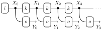
We will show that \((X_2 \perp Y_1 \mid X_1)\). This means that if we know the current state \(X_1\), the observation \(Y_1\) tells us nothing about \(X_2\). First, we pull out \(X_1\) and \(X_2\) as outputs, and delete all other outputs except \(X_1\), \(X_2\), and \(Y_1\):
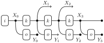
We can then simplify the diagram by applying the delete axioms:
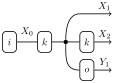
Finally, we delete the wire carrying \(X_1\) to condition on \(X_1\):
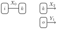
Since \(X_2\) and \(Y_1\) are disconnected in the resulting diagram, we conclude that \((X_2 \perp Y_1 \mid X_1)\). In this case, directly removing the wire carrying \(X_1\) disconnects the diagram, even before simplification. However, in more complex diagrams, the disconnection may only become apparent after simplification.
You can experiment with other choices of \(U\), \(W\), and \(X\) to find other conditional independence relationships in the model. For example, you can check that \((X_2 \perp X_0 \mid X_1)\), but not necessarily \((Y_2 \perp Y_0 \mid Y_1)\).
When the string diagram represents a Bayesian network (i.e., each box has a single output), this procedure is equivalent to the classic d-separation criterion. However, the string diagrammatic criterion is both simpler and more general. Its soundness was established by Fritz and Klingler (2023). Importantly, the result applies for the non-discrete kernels we introduce later in the course, even though we cannot always pre-condition on individual points in that setting.
3.3 Weighted sampling
Conditioning produces unnormalized kernels: the pre-conditioned boxes generally do not sum to one, so we cannot sample from them directly. The key idea is to factor each unnormalized kernel into a probability kernel (which we can sample from) and a weight that records how far the kernel is from being normalized. We first explain this factorization, then show how it leads to importance sampling: a method for estimating expectations by drawing weighted samples. Next, we extend the idea to full string diagrams and show that sampling from a diagram of factored kernels reduces to the single-kernel case. Finally, we recover rejection sampling as the special case where the weights are 0 or 1.
3.3.1 Factoring kernels
Let \(g : X \kernel Y\) be a discrete kernel, not necessarily normalized. Any probability kernel \(q : X \kernel Y\) with \(q(y \mid x) > 0\) whenever \(g(y \mid x) > 0\) gives a factorization of \(g\) into a weight and a probability kernel: \[ g(y \mid x) = w(y, x) \, q(y \mid x), \qquad w(y, x) := \frac{g(y \mid x)}{q(y \mid x)}. \]
When \(q(y \mid x) = 0\), we set \(w(y, x) := 0\). The product \(w \cdot q\) is still correct since \(g(y \mid x) = 0\) there by assumption. In diagrams, this factorization looks like:
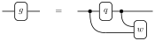
We call \(q\) the proposal and \(w : X \otimes Y \kernel I\) the weight. Each choice of proposal yields a different but equally valid factorization. We will see that sampling from \(g\) can be replaced by sampling from \(q\) and recording the weight \(w(y, x)\) as a side-product. Note that if \(g\) has no outputs, it is trivially in factored form with \(q = \del_X\) and \(w = g\).
A canonical choice is to normalize \(g\) directly: \[ g'(y \mid x) := \frac{g(y \mid x)}{\sum_{y' \in Y} g(y' \mid x)}, \] which gives a weight \(w(x) := \sum_{y \in Y} g(y \mid x)\) that depends only on \(x\). This formula works as long as \(\sum_{y} g(y \mid x) > 0\). If not, then \(g(y \mid x_0) = 0\) for all \(y\), so we can set \(g'(- \mid x_0)\) to be an arbitrary distribution and let \(w(x_0) = 0\).
For unnormalized kernels, factoring is mandatory: we cannot sample from \(g\) directly, so we must pass through a proposal. But factoring can also be useful when \(g\) is already a probability kernel, if it is hard to sample from \(g\) directly. We can instead sample from a simpler proposal \(q\) and correct with weights.
3.3.2 Importance sampling
Given a factored kernel \(g(y \mid x) = w(y, x) \, q(y \mid x)\), we can estimate expectations with respect to \(g\) by sampling from the proposal \(q\) and weighting. This is called importance sampling.
Suppose we want to compute \((g \then t)\) for some test function \(t : Y \kernel I\). Substituting the factorization: \[ (g \then t)(\bullet \mid x) = \sum_{y \in Y} t(y) \, g(y \mid x) = \sum_{y \in Y} t(y) \, w(y, x) \, q(y \mid x) = \mathbb{E}_{q(y \mid x)}[w(y, x) \, t(y)]. \]
By the law of large numbers, we can approximate this by drawing \(N\) samples \(y_i \sim q(- \mid x)\): \[ (g \then t)(\bullet \mid x) \approx \frac{1}{N} \sum_{i=1}^N w(y_i, x) \, t(y_i). \]
Each pair \((y_i, w(y_i, x))\) is called a weighted sample.
Remark: choice of proposal. The quality of the importance sampling estimator depends on how well the proposal \(q\) matches \(g\). Since the \(y_i\) are independent draws from \(q\), the variance of the estimator is \[ \mathrm{Var}_{q}\!\!\left[\frac{1}{N}\sum_{i=1}^N w(y_i,x) \, t(y_i)\right] = \frac{1}{N^2}\, \sum_{i=1}^N \mathrm{Var}_{q}\!\big[w(y_i,x) \, t(y_i)\big] = \frac{1}{N}\,\mathrm{Var}_{q}\!\big[w(y,x) \, t(y)\big]. \] Hence, to get a small variance, it is important that the weights do not vary too much under \(q\). If \(q\) is close to the normalized version of \(g\), the weights are nearly constant and the variance is low. If \(q\) places mass where \(g\) is small, most weights will be near zero with occasional large spikes, leading to high variance.
3.3.3 Sampling from diagrams with weights
Importance sampling extends naturally from a single kernel to an entire string diagram containing weights. This is the situation we face after conditioning: the pre-conditioned boxes are unnormalized kernels, and factoring each one produces a diagram consisting of probability kernels \(f_i\) and weights \(w_j\).
The key observation is that we can move all the weights to the right of the diagram to obtain:
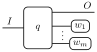
Here \(q\) is a probability kernel composed of all the \(f_i\), followed by a parallel product of all the weights \(w_j\). The total weight is then \(\prod_{j=1}^m w_j(x_j)\), where \(x_j\) is the input to \(w_j\). The internal structure of \(q\) may include passing wires where needed.
This means we can view any diagram with weights as a single factored kernel, and importance sampling applies directly. Instead of computing the product of all the weights at the end, we can record each weight sequentially as we move through the diagram. This gives the following procedure:
- Sample from the diagram by following wires from left to right.
- For each probability kernel \(f_i\), given its inputs \(x_i\), draw a sample \(y_i\).
- For each weight \(w_j\), given its inputs \(x_j\), record \(w_j(x_j)\).
- Output the total weight \(w = \prod_j w_j(x_j)\) and the output values \(y\).
- Estimate the expectation from \(N\) runs: \(\frac{1}{N} \sum_{k=1}^N w^{(k)} \, t(y^{(k)})\).
Using importance sampling for a conditioned model. Now consider the situation after conditioning. Pre-conditioning a kernel \(g : X \kernel Y \otimes Z\) on \(Z = \bar z\) gives the unnormalized kernel \(g_{\mid Z = \bar z}(y \mid x) = g(y, \bar z \mid x)\). The conditional expectation of a test function \(t\) is: \[ \mathbb{E}_{g(y \mid \bar z, x)}[ \, t(y) \,] = \sum_{y} t(y) \, g(y \mid \bar z, x) = \frac{\sum_y t(y) \, g_{\mid Z = \bar z}(y \mid x)}{\sum_{y'} g_{\mid Z = \bar z}(y' \mid x)} = \frac{\mathbb{E}_{g_{\mid Z = \bar z}}[\, t(y) \,]}{\mathbb{E}_{g_{\mid Z = \bar z}}[\, 1 \,]}. \]
Each expectation can be estimated by importance sampling using the procedure above. Taking the ratio of the two estimates gives: \[ \sum_{y} t(y) \, g(y \mid \bar z, x) \approx \frac{\sum_{i=1}^N w(y_i, x) \, t(y_i)}{\sum_{i=1}^N w(y_i, x)}. \]
In the context of Bayesian networks, this procedure is known as likelihood weighting.
Example 3.6 Recall the twins model from the Introduction:
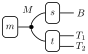
In that problem, we conditioned on the brother \(B\) being unaffected (0). This corresponds to sampling from the pre-conditioned model:
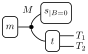
The importance sampling procedure for this model is as follows. For \(k = 1, \ldots, N\):
- Sample \(m^{(k)} \sim m(-)\)
- Compute weight \(w_s^{(k)} = s_{\mid B = 0}(\bullet \mid m^{k}) = s(0 \mid m^{(k)})\)
- Sample \((t_1,t_2)^{(k)} \sim t(- \mid m^{(k)})\)
- Return weighted sample \(((t_1,t_2)^{(k)}, w_s^{(k)})\)
Hence, as long as we condition on a variable that is the only output of a box, we can simply substitute the sampling step with a corresponding weighting step. For this to work, one needs to know the exact probability specification of the kernel in question.
Let us implement this in PyTorch. Recall from the Introduction that the model uses binary variables (0 = unaffected, 1 = affected/carrier) with all inheritance and zygosity probabilities equal to \(1/2\). The key difference from the original model is that instead of writing a function gen_s(M) that samples \(B\), we write a function w_s(M) that returns the probability of \(B = 0\), given the genotype of the mother \(m \in M\).
Now we use these functions to define a weighted sampling function that implements the importance sampling procedure above.
def weighted_sample(N):
M = gen_m(N) # 1. Sample mother
w = w_s(M) # 2. Weight = s(0 | M)
T1, T2 = gen_t(M) # 3. Sample twins
return T1, T2, wThe weighted samples that this provides can be used to estimate expectations of test functions by taking weighted averages: \[\sum_{y} t(y) \, g(y \mid \bar z, x) \approx \frac{\sum_{i=1}^N w(y_i, x) \, t(y_i)}{\sum_{i=1}^N w(y_i, x)}\]
In particular, we can estimate the conditional probabilities by choosing appropriate indicator functions.
Code
N = 100_000
torch.manual_seed(42)
T1, T2, w = weighted_sample(N)
at_least_one = ((T1 == 1) | (T2 == 1)).float()
both = ((T1 == 1) & (T2 == 1)).float()
p_at_least_one = (w * at_least_one).sum() / w.sum()
p_both = (w * both).sum() / w.sum()
print(
f"P(at least one affected | B=0) = {p_at_least_one.item():.4f} (exact: {5/24:.4f})"
)
print(f"P(both affected | B=0) = {p_both.item():.4f} (exact: {1/8:.4f})")P(at least one affected | B=0) = 0.2093 (exact: 0.2083)
P(both affected | B=0) = 0.1257 (exact: 0.1250)Example 3.7 A less common pattern that requires more work is when we condition on a variable that is not the only output of a box. For example, we could condition on \(T_1 = 1\) to get the following diagram:
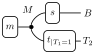
Note that the box \(t_{\mid T_1 = 1}\) is not normalized, yet still produces an output. To sample from it, we must find a way to write it as
\[t_{\mid T_1 = 1}(t_2 \mid m) = w(t_2, m) \, q(t_2 \mid m),\]
where \(q\) is a probability kernel. In the section on factoring kernels, we saw that a reasonable choice is to set \(w(m) := \sum_{t_2} t_{\mid T_1 = 1}(t_2 \mid m)\) and \(q(t_2 \mid m) = t_{\mid T_1 = 1}(t_2 \mid m) / w(m)\).
If we fully specify \(t : M \kernel T_1 \otimes T_2\), we can compute these new kernels and apply the following weighted sampling procedure: For \(k = 1, \ldots, N\):
- Sample \(m^{(k)} \sim m(-)\).
- Sample \(b^{(k)} \sim b(- \mid m^{(k)})\).
- Sample \(t_2^{(k)} \sim q(- \mid m^{(k)})\).
- Compute weight \(w^{(k)} = w(m^{(k)})\).
- Return weighted sample \(((b^{(k)},t_2^{(k)}), w^{(k)})\).
However, writing down \(t\) requires some effort. In rejection sampling, we were able to bypass this by simply implementing the generative process. To get explicit probabilities, one needs to stratify by zygosity \(Z\) (0: monozygous, 1: dizygous) by combining the chain rule and marginalization:
\[p(t_1,t_2 \mid m) = p(t_1,t_2 \mid m, Z = 0) \, p(Z = 0) + p(t_1,t_2 \mid m, Z = 1) \, p(Z = 1).\]
Using this, one can compute the quantities required to implement the importance sampler. Alternatively, one could find another representation of the same process that makes \(T_1\) the only output of a box, so that we can apply the simpler procedure from the previous example.
3.3.4 Rejection sampling as a special case
In the previous chapters, we used rejection sampling to perform inference: sample from the joint distribution, discard samples incompatible with the observations, and use the rest to estimate expectations. We can now see that rejection sampling is a special case of importance sampling where the weights are either 0 or 1.
Consider a kernel \(g : X \kernel Y \otimes Z\) and suppose we want to condition on \(Z = \bar z\). We can factor the pre-conditioned kernel \(g_{\mid Z = \bar z}\) by using the original kernel \(g\) as the proposal: \[ g_{\mid Z = \bar z}(y \mid x) = g(y, \bar z \mid x) = \sum_{z} \, \ivmark{z = \bar z} \, g(y, z \mid x). \]
Here the Iverson bracket \(\ivmark{z = \bar z}\) acts as a weight that equals 1 when the condition is satisfied and 0 otherwise.
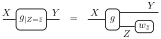
Applying importance sampling to this diagram, we draw samples \((y_i, z_i)\) from \(g\) and weight each by \(\ivmark{z_i = \bar z}\). The normalized estimate becomes: \[ \sum_{y} t(y) \, g(y \mid \bar z, x) \approx \frac{\sum_{i=1}^N \ivmark{z_i = \bar z} \, t(y_i)}{\sum_{i=1}^N \ivmark{z_i = \bar z}} = \frac{\sum_{i : z_i = \bar z} t(y_i)}{\#\{i : z_i = \bar z\}}. \]
This is precisely rejection sampling: draw from the unconditioned model and reject samples that do not match the observed data. The same idea applies when conditioning on multiple variables.
Rejection sampling is conceptually simple but much less efficient than importance sampling from the pre-conditioned model. If a sample does not match the observation exactly, it contributes nothing to the estimate. In contrast, importance sampling from the pre-conditioned model uses every sample, albeit with different weights.